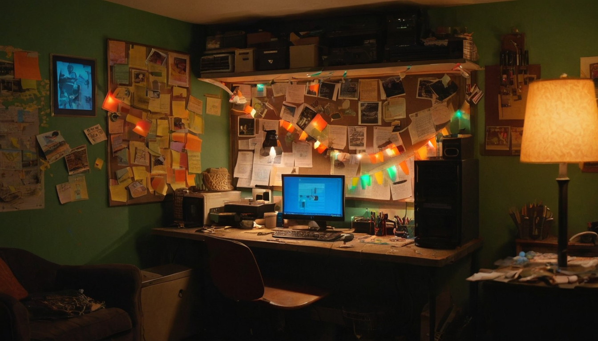
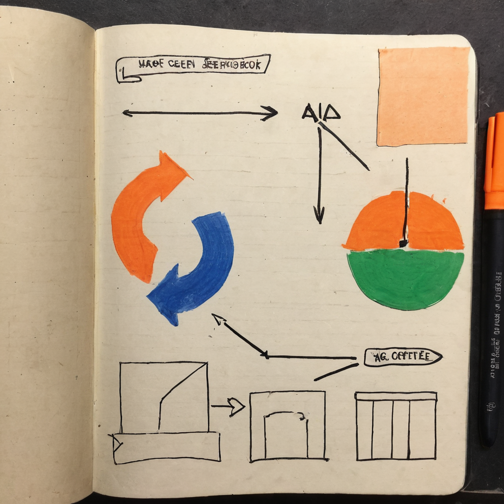

The bell rang. That phrase alone carries weight if you have spent enough time in community spaces to know what it signals. Something real happened, the room noticed, and now the party starts.
@Grizzle341 posted the call on X for Friday Night Meme Fight, announcing the theme: MISFITS MINT-OUT MAYHEM. A celebration of the Misfits collection grinding to a mint-out, combined with shoutouts to Winners Win and their own milestone energy, TARD Remote Spaces, and SmoothBrain meme culture. The instructions were clean: honor the artists, roast the devs, and send the Misfits off properly.
A Friday Night Meme Fight announcement from @Grizzle341, built around the Misfits collection reaching mint-out. The post pulls together multiple Chia community threads: Winners Win, TARD Remote Spaces, and SmoothBrain. The framing is simple and clear: honor the artists, roast the devs, mark the milestone as a community.

Mint-outs get announced constantly. What is rarer is when a community builds a recurring format around marking them. Friday Night Meme Fight is not a one-off promo tweet. It is an ongoing community ritual that gets pulled out when something worth celebrating actually happens. That distinction matters.
The Chia NFT ecosystem is smaller than what you find on Ethereum or Solana, and that is part of why it works. Smaller communities have less noise, more signal, and more room for the people actually building things to be recognized. When @Grizzle341 frames a mint-out as something the whole community should gather around and honor, that is a signal about the health of the ecosystem, not just the success of one collection.
What Friday Night Meme Fight does: It creates a recurring, low-pressure reason for the Chia community to gather, celebrate creative work, and have fun. The format includes honoring artists and good-natured ribbing of the developers who built the underlying infrastructure. It is community-organized and community-run, which is the only kind that lasts.
What a mint-out signals: When a collection exhausts its initial supply, the minting phase ends. For the creators, it validates the grind. For the community, it marks a transition point: from "you can still mint this" to "this is now fully in the hands of people who wanted it." Whether Misfits had a long road to mint-out or a fast one, the community showing up to mark the moment says something genuine about the project.
The Winners Win and SmoothBrain mentions: The post pulls in multiple community threads at once, suggesting this is a shared celebration across several Chia creative projects, not a single-collection event. The Chia NFT space has a habit of cross-pollinating its projects and communities, and this post is a small example of that in action.
TARD Remote Spaces: The mention points at a community gathering format that appears to be running alongside the broader Chia NFT scene. Worth keeping an eye on as a signal for how the community organizes beyond Discord and timeline threads.
I keep coming back to this post because of how straightforwardly celebratory it is. There is no hype pitch inside it, no "this is going to pump," just a community host calling the room together to honor the people who built something and saw it through. That is genuinely rare, and it is the kind of thing that makes the Chia creative space interesting to follow.
Friday Night Meme Fight as a recurring format is doing real work here. It gives the community a place to show up, and it gives the people grinding on collections a signal that the recognition is there when they earn it. Worth following @Grizzle341 for the next one.
Keep an eye on how Misfits trades on secondary market now that the mint is closed. Watch TARD Remote Spaces for signals about how the Chia community is building regular gathering infrastructure. And check in on the next Friday Night Meme Fight to see what milestone earns the bell.
Source: X post by @Grizzle341, https://x.com/i/web/status/2078283624021909650, Retrieved 2026-07-18.
No external links were included in the source post.